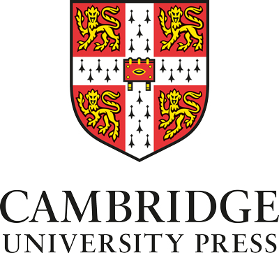
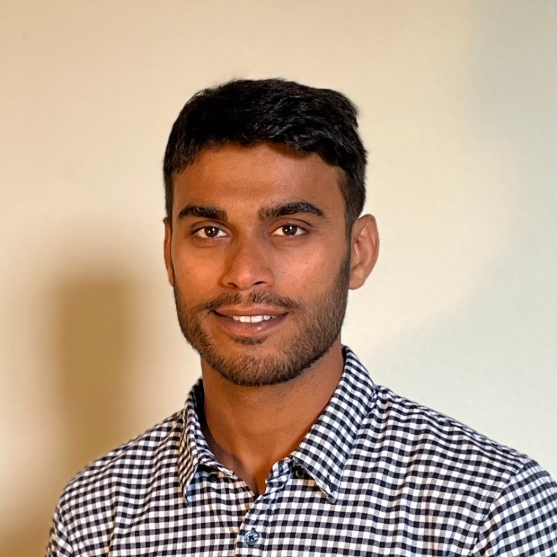
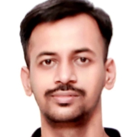
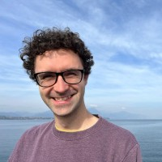
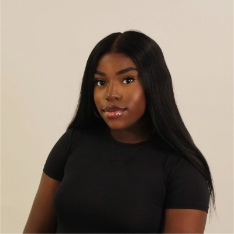
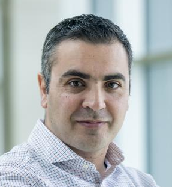
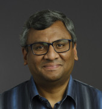

Institutional partners

EMOS originated at the APRIL AI Hub, a collaboration between the University of Edinburgh and the University of Cambridge, bringing together materials informatics, machine learning and device engineering.






